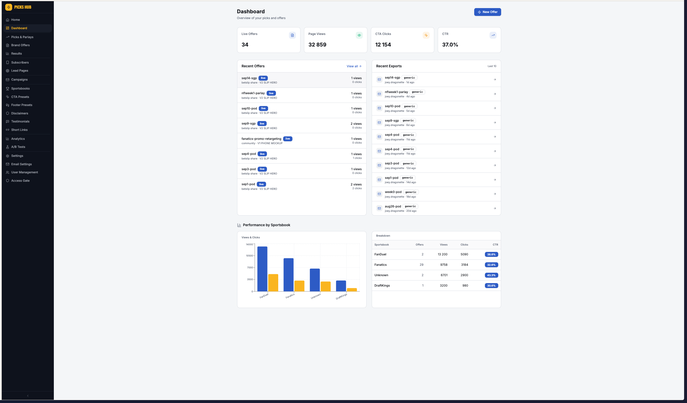
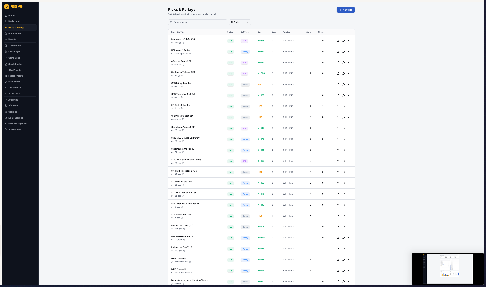
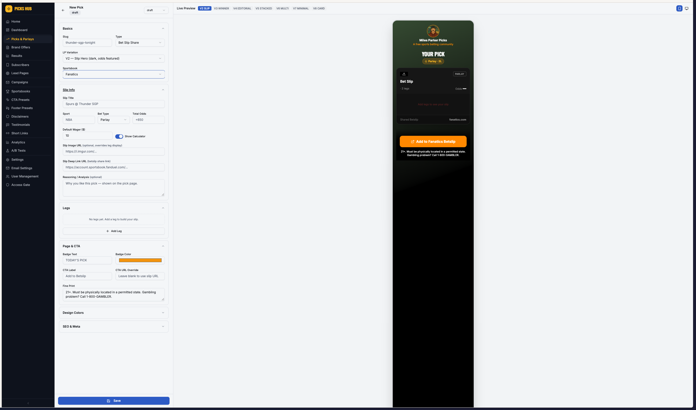
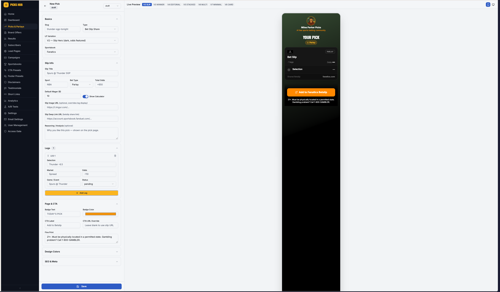
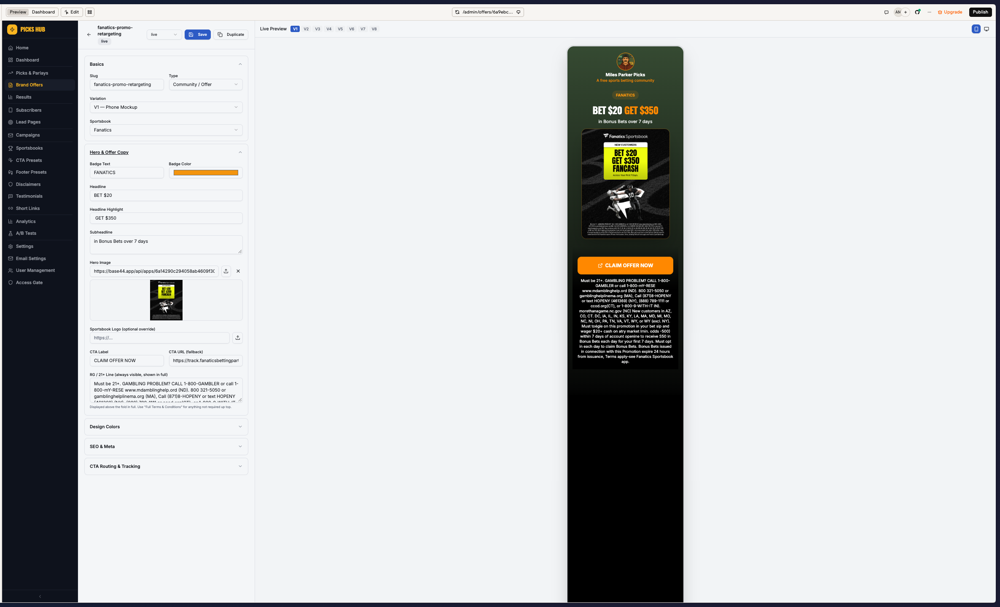
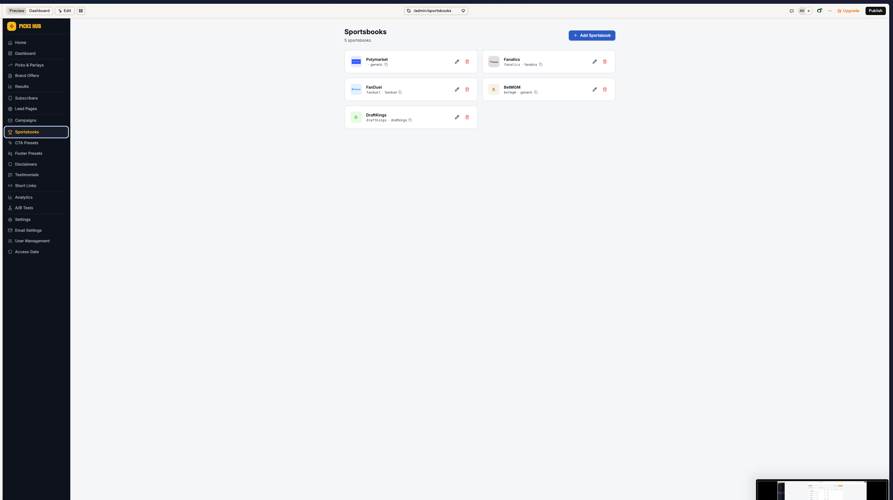
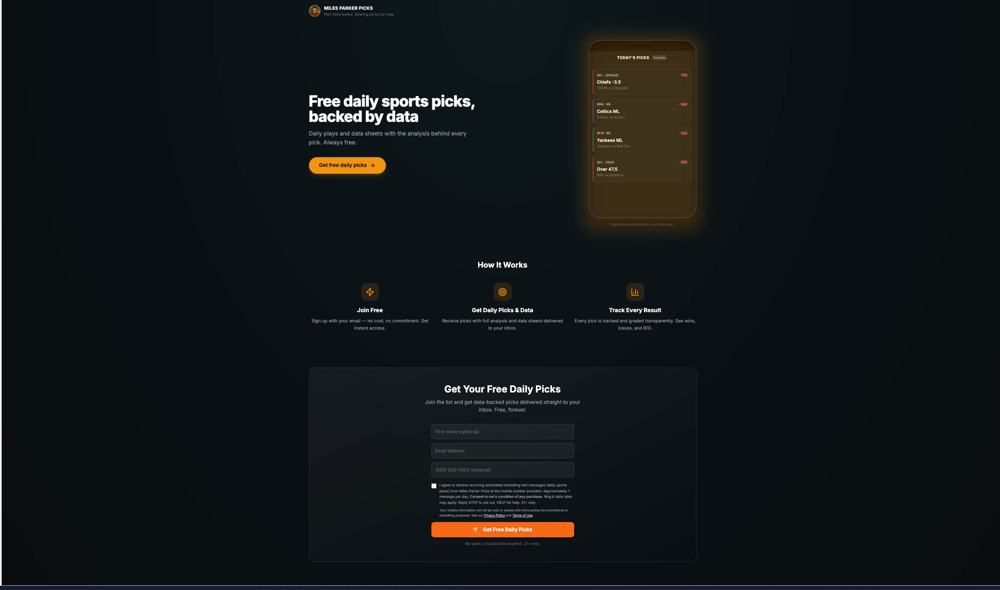
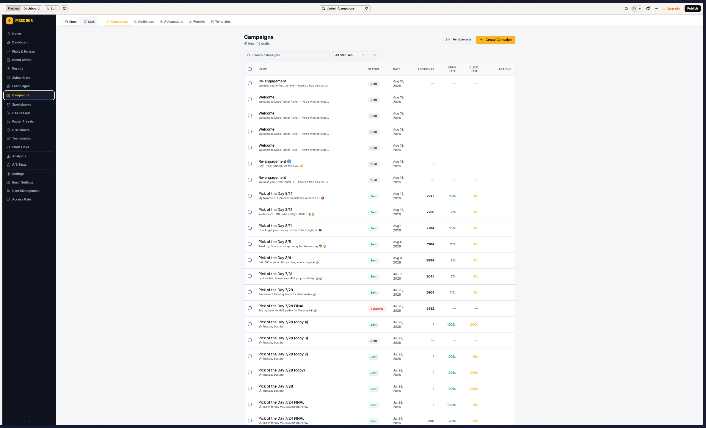
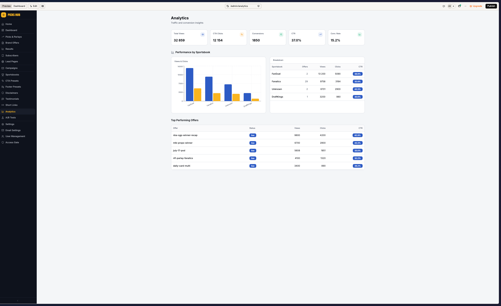

Miles Parker
The flagship. Carries the full three-engine stack — Fanatics state acquisition, FB & IG growth, and organic boosts. Highest spend and the primary acquisition workhorse.
META ADS · JAN–SEP 2026 · PREPARED BY ANDRÉ MOTA
How we run paid social on Meta: three campaign engines built on a roster of betting personas — one for sportsbook acquisition, one for cheap follower growth, one for organic reach.
THE MODEL
The account doesn't advertise as a single brand. It operates a stable of betting personas — each a self-contained handle, voice, and mid-funnel domain — and points three distinct campaign types at them depending on the objective.
THE ROSTER
Each persona is an independent tipster identity with its own social handles and its own mid-funnel domain. This keeps creative native to the feed, spreads risk across accounts, and lets each identity build its own audience and retargeting pool.
The flagship. Carries the full three-engine stack — Fanatics state acquisition, FB & IG growth, and organic boosts. Highest spend and the primary acquisition workhorse.
Football-first, IG-native persona focused on the Brazilian market. Overwhelmingly a follower & boost engine — drove the single largest block of Instagram follows in the account at the lowest cost per follow.
Strong Facebook growth persona. FB-Growth and organic-boost heavy, with a healthy sub-$1.10 cost per page like.
Facebook-led growth persona; also the one identity that carried a small DraftKings acquisition test before it was paused.
Casino-focused persona running FB growth. Hit target CPF (~$0.99) at limited scale.
Native voice beats brand ads in the feed, each handle compounds its own audience, and the structure isolates any single account's delivery or policy risk.
THE THREE ENGINES
Drives users from the persona's mid-funnel domain out to the sportsbook. Ads route to the persona's landing page; a CTA click fires an InitiateCheckout event and redirects the user to the sportsbook's own registration flow. Ad sets are split state by state across US legal-betting markets so budget, targeting and reporting stay isolated per market.
RUN ON: Fanatics (live) · DraftKings (tested, paused) | ~12.6K ICs · ~$4.05 blended CPIC
The workhorse for building each persona's owned audience. Optimised purely on cost per follower, split by platform because the two behave differently.
TARGETS: Instagram $1–2 CPF · Facebook ~$1 per page like | In period: FB ran $0.99–$1.28, IG well under target
Amplifies published persona content. Doubles as a follower driver and an engagement driver — putting spend behind winning posts to keep growing the audience while feeding the content social proof. This is also the engine DraftKings was moved into to chase betslip volume.
LARGEST BLOCK BY SPEND · lowest cost per profile visit (Zé do Gol boosts ~ $0.04 / visit)
TECHNICAL IMPLEMENTATION
The acquisition engine relies on a mid-funnel domain per persona, sitting between the ad and the sportsbook. That page is where the conversion event fires.
Persona-native creative served in a state-specific ad set.
Click lands on the persona's own mid-funnel landing page.
→ LandingPageViewUser taps the primary CTA to continue to the sportsbook.
→ InitiateCheckoutRedirect to the sportsbook's own registration / offer flow.
(handoff)GEO STRATEGY
Acquisition ad sets are split by US state. Being legal in a state isn't enough — some legal markets simply don't clear our CPF / cost-per-signup thresholds, so we concentrate budget where the unit economics work and cut or cap the rest.
| State (Fanatics) | Spend | Initiate Checkout | CPIC | Read |
|---|---|---|---|---|
| Illinois | $3,712 | 1,310 | $2.83 | Scale |
| Louisiana | $3,013 | 907 | $3.32 | Scale |
| Ohio | $4,606 | 1,350 | $3.41 | Scale |
| Michigan | $2,258 | 663 | $3.41 | Scale |
| Maryland | $2,536 | 736 | $3.45 | Scale |
| Pennsylvania | $2,316 | 670 | $3.46 | Scale |
| North Carolina | $3,990 | 1,149 | $3.47 | Scale |
| Colorado | $2,018 | 504 | $4.00 | Hold |
| Indiana | $2,646 | 660 | $4.01 | Hold |
| Kentucky | $2,261 | 560 | $4.04 | Hold |
| New Jersey | $2,432 | 584 | $4.16 | Hold |
| Tennessee | $3,329 | 796 | $4.18 | Hold |
| Massachusetts | $2,701 | 586 | $4.61 | Watch |
| Kansas | $1,387 | 290 | $4.78 | Watch |
| Virginia | $4,767 | 929 | $5.13 | Watch |
| Iowa | $2,708 | 481 | $5.63 | Watch |
| Connecticut | $2,264 | 377 | $6.01 | Cap / cut |
| Wyoming | $904 | 62 | $14.58 | Cut |
| Vermont | $464 | 18 | $25.76 | Cut |
Read column is a management convention: green ≈ below ~$3.50 CPIC, watch ≈ $4.50–$6, cut ≈ thin-population states where volume never builds. Thresholds are illustrative — set the live cutoff against the brand's payout economics.
OPERATING PRINCIPLES
Fanatics wants sign-ups → optimise InitiateCheckout. DraftKings wants volume, not registrations → move to boosts. Don't force one objective across brands with different market positions.
Fire the optimisation event on our own domain at the CTA, since we lose signal once the user reaches the sportsbook. It's the strongest intent signal we control.
Legal ≠ profitable. Keep ad sets per state so weak markets can be capped without dragging the winners, and let CPIC / cost-per-signup decide budget.
IG and FB followers cost and behave differently — hold IG to $1–2 CPF and FB near $1, and never blend them into one target.
Put spend behind posts that already earn organic engagement so boosts compound both reach and social proof, rather than paying to distribute weak content.
Independent handles and domains mean a delivery or policy problem on one identity never takes down the whole account.
PERFORMANCE APPENDIX
Spend and results by campaign engine, Jan 1 – Sep 15 2026. Figures are Meta-reported, in-period, delivering campaigns only.
| Engine | Spend | Primary result | IG follows | FB likes |
|---|---|---|---|---|
| Organic post boost | $146,504 | 1.45M engagements / visits | 54,187 | 661 |
| Follower growth — FB | $107,672 | 96,738 likes | 0 | 96,738 |
| Follower growth — IG | $101,955 | 956K profile visits | 37,796 | 3,808 |
| Acquisition (InitiateCheckout) | $54,264 | 13,416 ICs | 88 | 155 |
| Traffic & other | $85,601 | — | 3,050 | 173 |
| Lead / mixed engagement | $22,454 | — | 811 | 12,995 |
| Persona | CPF (page like) | vs $1 target |
|---|---|---|
| Miles Parker — FB Legal States | $0.53 | under |
| TheSpinTrader | $0.99 | on target |
| The Line Cook | $1.01 | on target |
| Miles Parker — FB Growth | $1.15 | on target |
| Cypher Picks | $1.28 | slightly over |
Instagram follower cost across boost and always-on campaigns ran comfortably inside the $1–2 target band, with Zé do Gol IG boosts the standout at roughly $0.04 per profile visit and the largest single block of IG follows.
PART 2 · PLATFORM MANUAL · MILES PICKS HUB (BASE44)
Picks Hub is the back office behind every persona. It's where you build the mid-funnel bet-slip pages and brand offers, manage sportsbooks and disclaimers, capture subscribers, run the email/SMS engine, and read performance. This is a walkthrough of every section — what it does, and how to set it up.
MENTAL MODEL
One Picks Hub instance runs one persona. The core loop: build a Pick or Brand Offer → it renders as a public mid-funnel page under the persona's domain → a visitor taps the CTA (InitiateCheckout) → they're deep-linked to the sportsbook. Everything else in the sidebar either feeds that page (sportsbooks, CTA presets, disclaimers, footers, testimonials) or works the audience the page captures (subscribers, campaigns, email/SMS, results).
Compose the slip or the bonus offer and pick a layout.
Renders on the persona domain with the chosen variation.
Deep-link to the sportsbook; the click is the tracked event.
Lead pages collect email/phone into the audience.
Campaigns and automations push the next pick.
SECTION 01
The landing view — a health check on offers and traffic at a glance.

The four counters across the top are Live Offers, Page Views, CTA Clicks and CTR — your fastest read on whether pages are being seen and clicked. Recent Offers lists what's live with per-item views/clicks; Recent Exports logs the last betslip exports and who ran them. Performance by Sportsbook ranks books by views, clicks and CTR — here Fanatics carries the offer volume (29 offers) while FanDuel shows the highest raw CTR.
SECTION 02
The core content engine — every bet slip you publish, build, and share.

Each row is one published pick: a title and slug (the URL, e.g. sep14-sgp), its status, bet type (Single, Parlay, SGP), odds, number of legs, the variation (layout) it renders in, and live views/clicks. Filter by status or search by slug to find one fast.

The editor is split: you build on the left, and the Live Preview on the right renders the public page in real time. The variation tabs along the top — V2 SLIP, V3 WINNER, V4 EDITORIAL, V5 STACKED, V6 MULTI, V7 MINIMAL, V8 CARD — let you flip the same pick between eight page designs without rebuilding it.
| Section | What it sets |
|---|---|
| Basics | Slug (the page URL), type (Bet Slip Share), LP variation, and which Sportsbook the slip routes to. |
| Slip Info | Slip title, sport, bet type, total odds, default wager, and the Slip Deep Link URL (the betslip share link the CTA sends the user to). Toggle the wager calculator on/off. |
| Legs | Add each leg — selection, market, odds, game/event and status (pending/won/lost). The preview assembles them into the slip card. |
| Page & CTA | Badge text/color, CTA label, an optional CTA URL override, and the fine print / RG line shown under the button. |
| Design Colors / SEO | Per-page color overrides and the meta title/description/share image. |

SECTION 03
Sportsbook bonus/promo landing pages — the "Bet $20, Get $350" style pages, separate from picks.

A Brand Offer is a bonus landing page rather than a slip. You set the headline and highlight ("BET $20" / "GET $350"), a subheadline, a hero image (the book's creative), the CTA label + tracking URL, and a mandatory RG / 21+ line shown in full above the fold. Offers carry their own layout family — O1 Bonus Hero through O6 Editorial Review — plus the V-series, so you can present the same promo as a phone mockup, a how-to-claim, an offer-plus-pick, a comparison, or an editorial review.
SECTION 04
The reusable building blocks every pick and offer pulls from — set these once and they populate everywhere.

Each book stores a logo, brand color, a deep-link template (with a {code} placeholder), a web fallback, and its available US states. Picks and offers reference these, so the right logo, colors and state rules apply automatically.
Saved CTA button configs — a label, a URL template, a color override and new-tab behaviour, optionally tied to a sportsbook. Build the "Add to Fanatics Betslip" button once and reuse it across every pick.
Reusable footers carrying the age gate (21+), helplines and legal links. Attach a preset instead of retyping compliance copy per page.
Disclaimers stores reusable RG/legal blocks; Testimonials holds social-proof quotes you can surface on lead pages and offers.
Branded short links that redirect (via the resolveShortLink function) to any page or deep link — clean links for bios, DMs and SMS, with the click captured.
SECTION 05
How the persona turns paid traffic into an owned audience.

Lead Pages are the opt-in surfaces — headline, subheadline, body copy, CTA text, a thank-you message and an optional redirect. Each page can auto-apply tags and trigger a welcome sequence on sign-up. The SMS consent block captures explicit opt-in (required for compliant texting).
Subscribers is the resulting list — each record holds phone (E.164), email, name, opt-in status (active / unsubscribed / bounced), SMS status and tags, scoped to the persona. This is the audience your email and SMS campaigns send to.
SECTION 06
The re-engagement engine that pushes each day's pick back to the list.

Campaigns covers both Email and SMS. Each row shows status (Draft/Sent/Cancelled), recipients and open/click rates. The tab bar adds Audiences (segments), Automations (triggered flows), Reports and Templates. Behind it, scheduled sends, sequences and events are processed by background workflows on a schedule.
| Capability | What it does |
|---|---|
| Campaigns | One-off broadcasts (e.g. "Pick of the Day 8/14") to the list or a segment. |
| Automations | Triggered flows — welcome series, daily recap, re-engagement for lapsed subscribers. |
| Sequences | Multi-step drip enrollments (the welcome sequence lead pages trigger). |
| Templates | Reusable email layouts so daily sends are fast and on-brand. |
| Send a Pick | Push an existing pick straight to subscribers as an email/SMS blast. |
Email Settings holds the sending domain and deliverability config; SMS runs through the messaging functions with delivery status and reply capture wired in.
SECTION 07
Where you read what's working and settle what's finished.

Top-line Total Views, CTA Clicks, Conversions, CTR and Conversion Rate, a per-sportsbook breakdown, and a Top Performing Offers ranking by CTR. This is where you decide which pages and books to lean into.
The Settle Picks tab lists picks pending settlement so you can mark each won/lost/push. Graded results feed the persona's public track record and win cards — the transparency angle the lead pages promise.
Run variants of a page/offer against each other and let the winner emerge on the metric that matters (CTR / conversion) — the systematic version of the variation tabs.
SECTION 08
The administrative controls that wrap the whole instance.